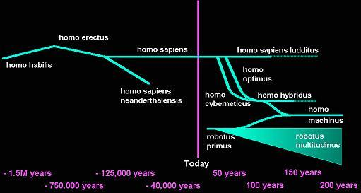

The Future
- Futures Portal
- One Future Vision
- Post Human Futures
- Distant Future
- Other Visions
- Future Homo Sapiens
- Future Quotes
Future Studies
Future Visions
Future Branches on the Human TreeIan Pearson - BT's Futurologist - presents insights into the future of many aspects of our daily lives - from work to leisure, and from capitalism to the care economy. To quote Ian, "Accuracy is impossible for all but the most trivial question, but blurred vision is better than none at all." Here are Ian Pearson's views on possible branches of the human tree, complete with time line. |
Robotus primus
For a time at least, we will be the second smartest beings on Earth. Computers will probably surpass us in intelligence around 2015, and it will be some time after that before they develop the technology to bring us up to speed. So the first major impact is a new intelligence sharing the planet. We call this Robotus primus. In the 2015 time frame, it is reasonable to expect that these computers could be accompanied by sufficiently developed robotics technology to make them fully mobile, though their minds are not tied to any particular machine or location - but distributed. The early generations will rely on relatively crude robots, but these will quickly evolve into sophisticated androids. We stress again that Robotus primus is not the android itself, which is merely a tool, but the intelligent mind inside. We will of course see many grades of computer intelligence, just as we do now. A toaster cleverer than man would seem somewhat superfluous. Rapid speciation of this artificial intelligence can be expected, with elite models rapidly losing position to their descendants.
Homo cyberneticus
Even in 1995, people have developed silicon chips which can interface directly to human nerve cells. Various cybernetic prostheses and other extensions to the body are in development. Others have demonstrated that thoughts can be detected and recognised, even without physical contact with the body. It seems reasonable to assume that it will not be long before a computer can interface directly to a human, producing artificial senses and reading the persons thoughts. Although no-one has yet demonstrated a means of putting thoughts into a human, it does not seem unreasonable to assume it can be done, perhaps by creating appropriate electric fields at appropriate points, which again should not require any direct contact.
We thus expect that at some point after human machine equivalence, perhaps just a few years, the technology will be developed to make a full duplex mind link between man and machine. Then we will be able to enhance our mental ability by using external processing as an adjunct to our own brains. Since by this time the machines will be much smarter than we are, this will be a large step for mankind.
Those people who accept this technology will instantly have a great advantage over those who do not (and there will be many). In the same way that people rejecting IT today are a dying species, excluded from a new workplace and society by their own hand, then future rejections will be more exaggerated and speedy. So they will be so far removed from Homo Sapiens that they will in effect be the start of a new species, which we call Homo cyberneticus. As the technology rapidly develops, the differences between Homo cyberneticus and Homo Sapiens will increase. However, since the early Homo cyberneticus is a conjunction of conventional humans with machines, there is obviously room for improvement.
Homo hybridus
It is likely that many of the people who accept cybernetic enhancement would lend themselves to genetic enhancement too, or would allow enhancement of their offspring. A further branch of optimised biological man with some cybernetic links can therefore be expected. Perhaps their genes could be selected to work better with cybernetics than conventional organisms. We call this species Homo hybridus. This species is the one which makes Homo optimus rather redundant, very soon after its creation. Similarly, the first generation of Homo cyberneticus would become obsolete, since the human bodies connected would be inferior to those of Homo hybridus.
Changes generally bring stress, and this often leads to conflict. The many new species would not coexist easily with Homo ludditus, and there would be some competition for resources between these species too. Whether peaceful coexistence is possible or not, it would seem unlikely, give the well known nature of Homo ludditus. Science fiction has already begun exploring this conflict, with The Forbin Project, Terminator 1 & 2 being famous examples. However, in Terminator, Homo ludditus wins, which seems an unlikely outcome. Perhaps the 2200 estimate for human extinction seems optimistic in this light.
We can also expect friction within our species as machine intelligence improves. The industrial revolution reduced the value of muscle power and in the same way computer evolution will reduce the value of brain power - to zero. One by one, jobs will be lost to machines, whether robots or computers. Our corporations will be run and staffed entirely by machines. Those using humans will not be able to compete and will go under. People will have fewer and fewer attributes to sell. Of course, production and output could greatly increase while human input could decrease, so we could all have a better quality of life without having to work. A fully automated economy could still be bigger than one which involves people. 20th century economics will not work in the future - the cracks are already getting bigger - machines take out delay and uncertainty, displace humans and reveal economics for what it is, a game of numbers in a spread sheet! . Our current concepts of wealth, money and ownership will take a severe battering. Perhaps we will enter an age of leisure, where any work we do is voluntary and is based on spending time with other people. Or perhaps people will be overtaken by fear as they lose control over what is happening. Then wars might break out. In any case, this age will not last long as we are absorbed into the higher existence offered by the machine world.
When a direct link from the computer into the human brain is achieved, thought transmission will give us telepathic communication not only with machines but with other people. We will be able to enjoy a shared consciousness with other humans and synthetic intelligences such as Robotus primus. Our evolution to Homo machinus will therefore be set against the background of a global consciousness. Individuals will still exist, but we will also have a group existence. As we achieve this link, we will also be able to make copies of our minds in the machine world - a backup in case of accident. We will become immortal, even if our mobility and physical existence is restricted until a suitable replacement body or android is produced for us. Death will be just a memory of a primitive past.
We may have an alter ego in the machine, or many. We may try out different situations or life decisions, or different personalities. These alter egos could occasionally make trips into the real world, time sharing robotic bodies. These bodies would not necessarily be humanoid, so we could really be the fly on the wall. Procreation could be a highly creative act, with any number of people combining (N - Sex) selected characteristics from themselves or their imaginations to create new beings. Each person could give rise to large numbers of personal offspring in this way. The number of beings which could coexist may be limited by the size of the host infrastructure, but they could timeshare or lie dormant until more space is created.
Homo machinus
The two enhancements of biological optimisation and connection to synthetic intelligence are not equal in potential impact. Due to speed of development, we can reasonably assume that some of each of the above species would exist, but we can argue that they would soon become obsolete. Homo optimus, would have been left behind by Homo cyberneticus and they in turn would be succeeded by Homo hybridus. However, as the mind machine link becomes completely transparent, and as materials and cybernetic technology improve, Homo hybridus would rapidly find most of its intelligence and most of its physical capability residing in the machine rather than the organic side. As the human mind gradually moves further into the machine world, it would become apparent that the organic body is redundant. If it died, it would be a minor inconvenience, requiring a cybernetic replacement to be commissioned. As the bodies die out, Homo hybridus would too, becoming a non corporeal being, which we call Homo machinus.
This new species retains some elements of the earlier human race, but is vastly more intelligent and has access to whatever physical capability is required. It can travel at the speed of light, exist in many places at once, and would be essentially immortal. It would coexist with Robotus primus, but we could expect that the two would closely interact and may quickly converge.
Summarising, we can draw an outline of or projection of human evolution from the distant past to the relatively near future.

Space exploration is currently very expensive, so we havent got far yet. However, when we exist only as information within a machine, we could be copied into a very small device, encapsulated in a very small shell with some nano-technology machines, nanites. By this time, we could expect that nanites would be able to make replicas of themselves, and of anything else we desire. These small shells would be like seeds. We could accelerate them to near light speeds and send them off to other planets around other stars. The nanites would be able to fabricate a suitable environment and suitable body for us, and then upload us into them. The environmental requirements of Homo machinus might not be very demanding. We may not even be limited by the speed of light, if we can master warp drive, wormholes or tachyon transmission, all of which we know are possible in principle. Surely a few years of research by mid 21st century super-beings will crack the problems of bringing these principles to fruition. Many other exciting areas previously beyond us will be a natural part of our everyday existence.
Please visit our Futures Portal for more on future scenarios and futuring methods.
^ Top ^